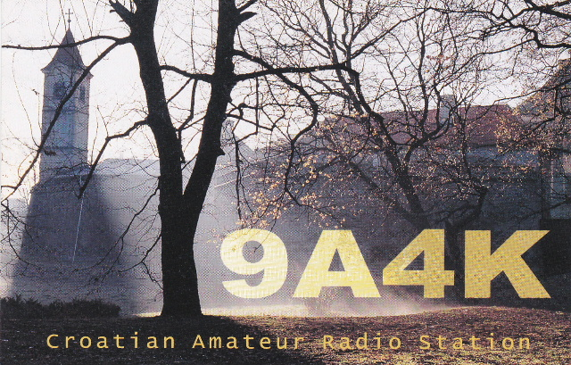
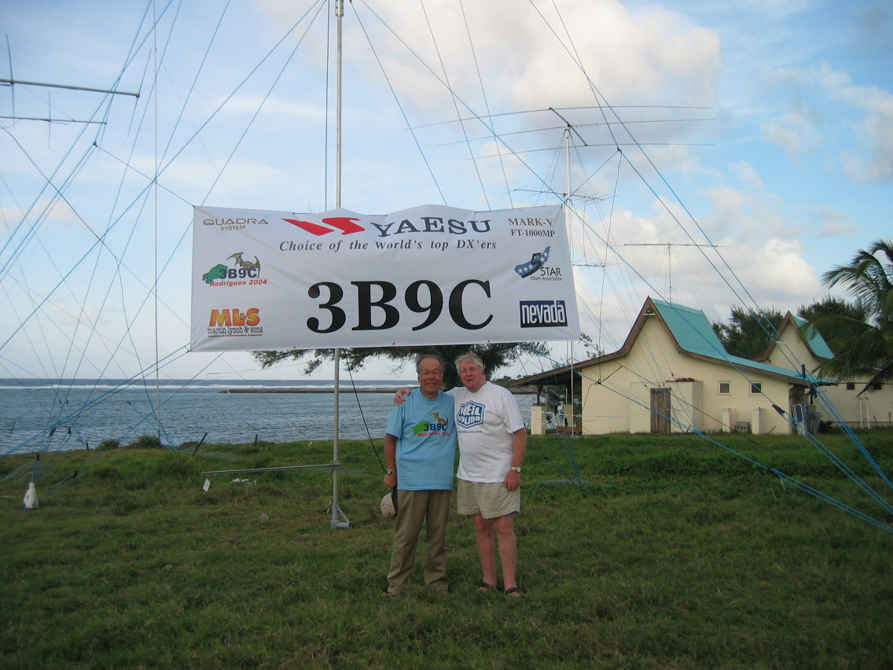

Flash ! DX


 |
|
|
|
 |
|
|
[Back Issues Jan.2018] TIME:UTC(JST-09:00) Report from JA1RJU(PM95sq) 31.Jan.2018(15:00b) Report from JA1RJU(PM95sq) 30.Jan.2018(15:00b) Report from JA1RJU(PM95sq) 29.Jan.2018(15:00b) Report from JA1RJU(PM95sq) 28.Jan.2018(15:00b) Report from JA1RJU(PM95sq) 27.Jan.2018(15:00b) Report from JA1RJU(PM95sq) 26.Jan.2018(15:00b) Report from JA1RJU(PM95sq) 25.Jan.2018(15:00b)Report from JA1RJU(PM95sq) 24.Jan.2018(15:00b) Report from JA1RJU(PM95sq) 23.Jan.2018(15:00b) Report from JA1RJU(PM95sq) 22.Jan.2018(15:00b)
◎”南岸低気圧”が通過した22日の大雪以降、関東地方も寒気団に覆われ、早朝の気温は連日氷点下、日中でも4-5度の低温が続いている。25日の朝は東京都心で-4度の最低気温となり、1970年以来40年ぶりの記録となった。都心部の首都高速は未だに"閉鎖"されている。都心よりも20-30kmほど内陸部の西部地域の三鷹市、府中市では氷点下-8度を記録している。22日に積もった雪は凍り付き、建物の陰の雪は溶けずに凍り付いたまま。この寒さはこのまま一週間は続きそう。 6mのDXコンデションも凍りついたまま。 Report from JA1RJU(PM95sq) 21.Jan.2018(15:00b) Report from JA1RJU(PM95sq) 20.Jan.2018(15:00b) Report from JA1RJU(PM95sq) 19.Jan.2018(15:00b) Report from JA1RJU(PM95sq) 18.Jan.2018(15:00b) Report from JA1RJU(PM95sq) 17.Jan.2018(15:00b) Report from JA1RJU(PM95sq) 16.Jan.2018(15:00b)
◎関東の太平洋南岸に接近中の”南岸低気圧”の影響で、関東地方では平成26年2月以来の大雪となっている。東京西部では午後から本格的な積雪となり、東京都心を含む関東甲信各地に大雪警報が出されている。23:00JST現在、東京都心部で23cm、西部の多摩地域で15-30cm以上、関東北部、甲信地方では30cm以上の降雪が記録されている。雪は低気圧が通過する深夜がピークとなり未明には雪は止み、明日の朝には晴れ間が戻る予定。今回の雪は水分を多く含むためアンテナ・エレメントへの着雪"による被害も予想される。
|
●G3NUG Neville Cheadle氏 Silent Key (2018/01/16) 英国のCDXC(The UK DX Foundation)の前会長のG3NUG・Neville Cheadle氏がSK(死去)。 2015年までCDXCの会長だったG3NUG・Neville氏が1月14日に死去したとの連絡が、1月16日にG3SED・Mikeから伝えられた。Neville氏は心臓の病を持っていたが今のところ死因は不明。享年77歳。 Neville氏はCDXCのDX-Groupの”Five Star DXers (FSDXA)"のリ－ダー(責任者)として、1998年の9M0C(Spratly)からの運用を初めとして、2001年のD68C(Comoros)、2004年の3B9C(Rodorigus)、2007年の3B7C(St.Brandon)、2011年のT30C(Eastern Kiribati)などからグループのリーダーとして運用、DX-Peditionの”最多QSO記録”の実績を残した。 Neville氏は、2015年に22年間勤めたCDXCの会長をG3XTT・Donに引継ぎ、無線関係の第一線から引退、田舎へ引越しXYLのTrishさんと余生を送っていた。 筆者(JA1RJU)も9M0C、D68C、3B9Cの3ヶ所のDX-Peditionに同行、DX-Peditionの楽しみを教えて頂いた。特に3B9Cでの1,000局を超える6mのJAとのQSOや初の6mのEME-QSOなどは、昨日の様に思い出されます。 Neville氏は英国で発行しているIOTAのアワードの責任者でもあり、2000年に横浜で開催された「ハムフェア」ではアワードの紹介の講演を行った。 Neville氏のご冥福をお祈りします。  
(左)2007年のSEANETに参加した御夫妻(赤のセーター姿) On 15 Jan 2018 21:59, "g3sed via Groups.Io" It is with great sadness that I have to report Neville’s unexpected passing yesterday, after a knee replacement operation. It is suspected he had a heart attack, but this is not confirmed! Many of you, like me will have fond memories of Neville and our thoughts are with Trish his wife and all his family. I have no other information at this time. Regards Mike Devereux G3SED |
Report from JA1RJU(PM95sq)
15.Jan.2018(15:00b)
Report from JA1RJU(PM95sq)
14.Jan.2018(15:00b)
Report from JA1RJU(PM95sq)
13.Jan.2018(15:00b)
Report from JA1RJU(PM95sq)
12.Jan.2018(15:00b)
Report from JA1RJU(PM95sq)
11.Jan.2018(15:00b)
Report from JA1RJU(PM95sq)
10.Jan.2018(15:00b)
Report from JA1RJU(PM95sq)
09.Jan.2018(15:00b)
Report from JA1RJU(PM95sq)
08.Jan.2018(15:00b)
Report from JA1RJU(PM95sq)
07.Jan.2018(15:00b)
Report from JA1RJU(PM95sq)
06.Jan.2018(15:00c)
BI4TGJ 02:2730 50.313-1427 WSJT FT8 -10dB CQ
BI4TGJ 02:2930 50.313-1427 WSJT FT8 -11dB QSO with JA7
BI4TGJ 02:4030 50.313-1426 WSJT FT8 -14dB/-11dB(QSO=50W)
BH5HAI 02:4230 50.313-1427 WSJT FT8 into JA1(PM96)
BI4TGJ 02:4330 50.313-1427 WSJT FT8 -11dB QSO with JA6
BI4TGJ 02:4430 50.313-1426 WSJT FT8 -15dB CQ
BI4TGJ 02:4630 50.313-1426 WSJT FT8 -15dB QSO with JA5
◎今年初めて海外からの入感が確認された。今回も50.313MHｚの”FT8”で、BI4TGJは日本全域に入感していたが、東京西部(PM95)ではこの時間には韓国(BH5HAI)は確認できなかった。
Report from JA1RJU(PM95sq)
05.Jan.2018(15:00b)
Report from JA1RJU(PM95sq)
04.Jan.2018(15:00b)
Report from JA1RJU(PM95sq)
03.Jan.2018(15:00b)
◎New Year Party 2018
Report from JA1RJU(PM95sq)
02.Jan.2018(15:00b)
◎New Year Party 2018
Report from JA1RJU(PM95sq)
01.Jan.2018(15:00b)